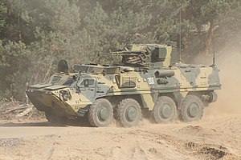

.png)
БТР-4
БТР-4 «Буцефал»[а 1] (англ. BTR-4 «Bucephalus») — повнопривідний восьмиколісний бронетранспортер (БТР) з колісною формулою 8×8, розроблений в Україні Харківським конструкторським бюро машинобудування (ДП ХКБМ), виготовляється на заводі імені Малишева.
БТР-4 «Буцефал» призначений для транспортування бійців механізованих підрозділів та вогневої підтримки в бою. БТР використовують для оснащення підрозділів, здатних вести бойові дії в різних умовах, зокрема в умовах застосування противником зброї масового ураження. БТР може бути базовою машиною для оснащення спеціальних підрозділів швидкого реагування і морської піхоти. БТР-4 може виконувати поставлені завдання цілодобово, в різних кліматичних умовах, на дорогах із різним покриттям і в умовах повного бездоріжжя. Діапазон робочих температур повітря від −40 до +55 °C.
Запуск серійного виробництва
Виробництво БТР-4 було налагоджене на ДП ХКБМ імені Морозова, де машини збирають у дослідному виробництві[11].
У грудні 2015 року стало відомо про підготовку до початку серійного виробництва на Житомирському бронетанковому заводі[12]. У травні 2016 року на ЖБТЗ було налагоджене виробництво корпусів бронетранспортерів[13][14]. Згодом у Житомирі налагодять повне виробництво БТР-4, що дасть змогу збільшити їх виробництво[15].
На початку серпня 2018 року стало відомо, що через доволі великий попит на БТР-4 на Заводі ім. В. О. Малишева було розпочато налагодження виробництва корпусів для цих машин. Загалом зварювальники, слюсарі та інструментальники заводу мають з'єднати понад 1700 деталей, з них більше 400 — броньованих. Раніше для серійного випуску БТР-4 на ДП «Харківське конструкторське бюро машинобудування імені О. О. Морозова» корпуси виробляв лише Лозівський ковальсько-механічний завод
.jpg)
.jpg)
BTR-4
 Тип бронетранспортерПоходження Україна
Розробник ХКБМ
Виробник Україна Завод імені В. О. Малишева
Вартість одиниці $1,1[1][2]— $1,6 млн.[3][4]
Виготовлення з 2008
Виготовлена кількість 242+